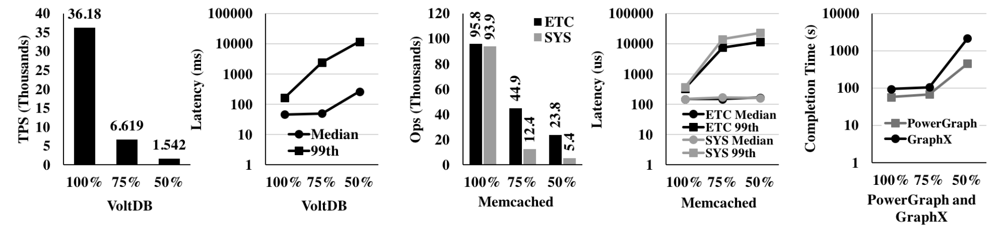
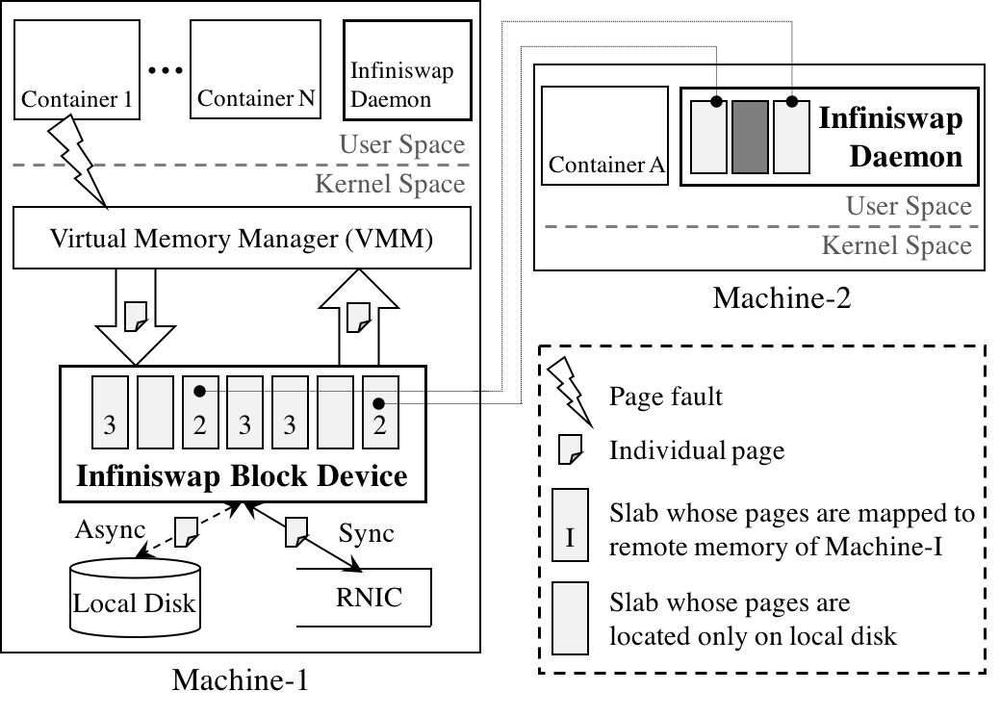
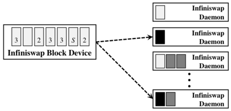
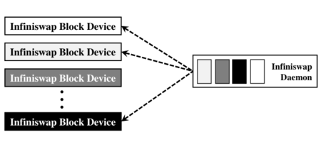
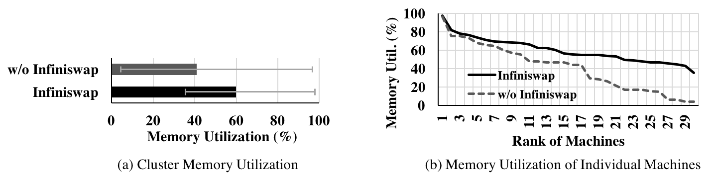
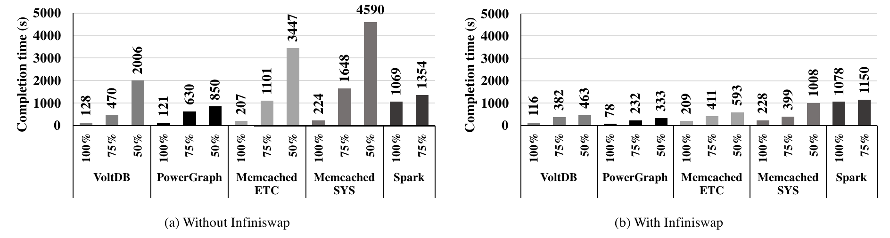

About Infiniswap
Memory-intensive applications suffer large performance loss when their working sets do not completely fit in the physical memory. Memory disaggregation can expose remote memory across a cluster to those applications and mitigate such loss. However, existing proposals call for new architectures and/or new programming models, making them infeasible.
We have developed a practical memory disaggregation solution, Infiniswap, which is a remote memory paging system for clusters with low-latency, kernel-bypass networks such as RDMA. Infiniswap opportunistically harvests and transparently exposes unused memory across the cluster to unmodified applications by dividing the swap space of each machine into many chunks and distributing them to unused memory of many remote machines. For scalability, it leverages the power of many choices to perform decentralized memory chunk placements and evictions. Applications using Infiniswap receive large performance boosts when their working sets are larger than their physical memory allocations.
Motivation
Modern operating systems (OSes) provide each applica- tion a virtual memory address space that is much larger than its physical memory allocation. Whenever an application addresses a virtual address whose corresponding virtual page does not reside in the physical memory, a page fault is raised. If there is not enough space in the physical memory for that virtual page, the virtual mem- ory manager (VMM) may need to page out one or more in-memory pages to a block device, which is known as the swap space. Subsequently, the VMM brings the missing page into the physical memory from the swap space; this is know as paging in.
We run several applications in its own container with different memory constraints. x% in the X-axes of Figure 1 refers to a run inside a container that can hold at most x% of the application's working set in memory, and x < 100 forces paging in from/out to the machine's swap space.
Figure 1 shows significant, non-linear impact on application performance due to paging. For example, a 25% reduction of memory results in a 5.5× and 2.1× throughput loss for VoltDB and Memcached; PowerGraph and GraphX worsen marginally. However, another 25% re- duction makes VoltDB, Memcached, PowerGraph, and GraphX up to 24×, 17×, 8×, and 23× worse, respectively. These gigantic performance degradations reflect the potential benefits that an efficient memory disaggregation system can deliver.

Figure 1: Performance of various applications among different memory constraints.
Design Overview
Infiniswap is a decentralized memory disaggregation solution for clusters with low-latency, kernel-bypass networks such as RDMA. The main goal of it is to efficiently expose all of a cluster's memory to user applications. To avoid modifying existing applications or OSes, Infiniswap provides remote memory to local applications through the already-existing paging mechanism.
Infiniswap has two primary components -- the Infiniswap block device and the Infiniswap daemon -- that are present in every machine and work together without any central coordination (Figure 2).

Figure 2: Infiniswap architecture.
Infiniswap Block Device
The Infiniswap block device exposes conventional block device I/O interfaces to the virtual memory manager (VMM), which treats it as a fixed-size swap partition. The entire storage space of this device is logically partitioned into fixed-size chunks (ChunkSize), which are the units of remote mapping and load balancing in Infiniswap.
Infiniswap consults the status of remote memory mapping to handle paging requests. If a chunk is mapped to the remote memory, Infiniswap synchronously writes a page-out request for that chunk to remote memory using RDMA WRITE, while writing it asynchronously to the local disk. If it is not mapped, Infiniswap synchronously writes the page only to the local disk. For page-in requests, Infiniswap reads data from the appropriate source; it uses RDMA READ for remote memory.

Infiniswap Daemon
On the Infiniswap daemon side, a chunk is a physical memory region of ChunkSize that is mapped to and used by an Infiniswap block device as remote memory. The Infiniswap daemon only participates in control plane activities. It (i) responds to chunk-mapping re- quests from Infiniswap block devices; (ii) preallocates its local memory when possible to minimize time over- heads in chunk-mapping initialization; and (iii) proactively evicts chunks, when necessary, to ensure minimal impact on local applications. All control plane communications take place using RDMA SEND/RECV.

Figure 3: Inifiswap block device and daemon.
Evaluation
Infiniswap Performance as a Block Device
Before focusing on Infiniswap's effectiveness as a decentralized remote paging system, we focus on its raw performance as a block device. We used fio -- a well-known disk benchmarking tool for these benchmarks.
We performed parameter sweeps by varying the number of threads in fio from 1 to 32 and I/O depth from 2 to 64. The left figure below shows the highest average bandwidth observed for different block sizes across all these parameter combinations for both block devices. In terms of bandwidth, Infiniswap Write performs better Read and saturates the 56 Gbps network at larger block sizes (Figure 4a).
For remote cpu usage, we observed Infiniswap bypasses remote CPU in the data plane and has close to zero CPU overheads in the remote machine (Figure 4b).
Figure 4: Micro-benchmark results.
Infiniswap's Impact on Applications
Here, we focus on Inifiswap's performance on multiple memory-intensive applications with a variety of workloads (shown below) and compare it to that of disk.
Workloads. We used four memory-intensive application and workload combinations:
- TPC-C benchmark on VoltDB;
- Facebook workloads on Memcached;
- Twitter graphon PowerGraph; and
- Twitter data on GraphX and Apache Spark.
Methodology. We focused on single-machine performance and considered three configurations -- 100%, 75%, and 50% -- or each application. We started with the 100% configuration by creating an lxc container with large enough memory to fit the entire workload in memory. We measured the peak memory usage, and then ran 75% and 50% configurations by creating containers with enough memory to fit those fractions of the peak usage. We use a single remote machine as the remote swap space for Infiniswap.
As shown in Figure 5 and 6, Infiniswap improves throughputs of unmodified VoltDB, Memcached, PowerGraph, GraphX, and Apache Spark by up to 4× to 15.4× over disk and tail latencies by up to 61×.
Figure 5: Infiniswap performance for the same applications in Figure 1.
Cluster-Wide Performance
So far we have considered Infiniswap's performance for individual applications and analyzed its components. In this section, we then deploy Infiniswap on a 32-machine, 56 Gbps Infiniband cluster and observe whether these benefits hold in the presence of concurrency and at scale.
Methodology. For this experiment, we used the same applications, workloads, and configurations to create about 90 lxc containers. We created an equal number of containers for each application- workload combination. About 50% of them were using the 100% configuration, close to 30% used the 75% configuration, and the rest used the 50% configuration. We placed these containers randomly across 32 machines to create an memory imbalance scenario and started all the containers at the same time. We measured completion times for the workload running each container; for VoltDB and Memcached completion time translates to transactions- or operations-per-second.
Figure 6a shows that Infiniswap increased total cluster memory utilization by 1.47× by increasing it to 60% on average from 40.8%. Moreover, Infiniswap significantly decreased memory imbalance (Figure 6b): the maximum-to-median utilization ratio decreased from 2.36× to 1.6× and the maximum-to-minimum utilization ratio decreased from 22.5× to 2.7×.

Figure 6: Memory utilization in the cluster.
Finally, Figure 7 shows the overall performance of Infiniswap. We observe that Infiniswap's benefits are not restricted only to microbenchmarks, and it works well in the presence of cluster dynamics of many applications. Although improvements are sometimes lower than those observed in controlled microbenchmarks, Infiniswap still provides 3×-6× improvements for the 50% configurations.

Figure 7: Applications performance in the cluster using Infiniswap.
Papers
J. Gu, Y. Lee, Y. Zhang, M. Chowdhury, and K. G. Shin. Efficient Memory Disaggregation with Infiniswap. In NSDI, 2017.
Y. Zhang, J. Gu, Y. Lee, M. Chowdhury, and K. G. Performance Isolation Anomalies in RDMA. In KBNets, 2017.
Contact
infiniswap@umich.edu